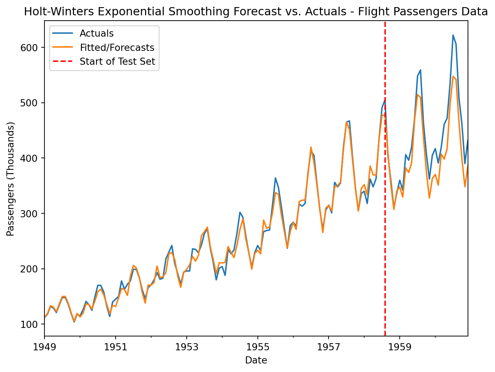

#Necessary imports
import numpy as np
import pandas as pd
import matplotlib.pyplot as plt
import seaborn as sns
#Load flights data into 'flights' dataframe
flights = sns.load_dataset("flights")
#This code converts the 'year' and 'month' columns into a single datetime column then sets that column as our index.
flights['date'] = pd.to_datetime(
flights['year'].astype(str) + '-' + flights['month'].astype(str), format='%Y-%b'
)
flights = flights.set_index('date')
#Separate the target feature into a series. We no longer need the month/year columns since our index already has that information.
#.asfreq('MS') explicitly marks the index as monthly (month start), so statsmodels doesn't have to guess the frequency.
y = flights['passengers'].asfreq('MS')Triple Exponential Smoothing
Time Series
Exponential Smoothing
Forecasting
Statsmodels
Learn how to use Exponential Smoothing to forecast time series that have trend and seasonality
In previous articles we covered Simple Exponential Smoothing and Exponential Smoothing with Trend. We discussed the key concepts behind these widely popular forecasting methods and walked through some simple coding examples in Python. If you are unfamiliar with the basics of Exponential Smoothing, I suggest that you start with those two articles.
In this article, we now turn to the Holt-Winters model, commonly called “Triple Exponential Smoothing”. This, the most complete of the classic Exponential Smoothing methods, can handle time series with trend and seasonality. We first consider the basic conceptual difference with Triple Exponential Smoothing, without getting too deep into the math. Then we walk through a basic implementation of this type of model using the statsmodels module in Python.
The Key Concept Behind Triple Exponential Smoothing (Minimal Math)
As discussed in this article on time series structure, seasonality refers to repeating fluctuations in a time series dataset that occur at consistent frequencies. Triple Exponential Smoothing handles the seasonal variations of a time series by means of a third smoothing factor, typically denoted with the Greek letter gamma \(\gamma\).
Think of Exponential Smoothing as a repeating loop. Each time an additional actual value is added to your time series, the loop includes that actual value in its smoothing calculation of three key items:
- Level
- Trend
- Seasonal
Simple Exponential Smoothing just uses the first of these. Holt (Double Exponential Smoothing) uses Level and Trend. Holt-Winters (Triple Exponential Smoothing) uses all three of these items. Gamma controls how much weight the newest observation gets when updating the seasonal estimate for its period (for example, a particular month), with the remaining weight going to that period’s previous seasonal estimates in an exponentially decaying manner. This can be done to align with additive seasonal fluctuations (seasonal variations that remain consistent in size, regardless of the level of the series) or multiplicative seasonal fluctuations (seasonal variations that change in proportion to the level of the series). For help determining whether your data has additive or multiplicative seasonality, check out our article.
Once you start predicting into the future, the forecast for an Exponential Smoothing model with Trend and Seasonality combines the most recent “level” value with a cumulative “trend” value (depending on how far into the future you are predicting). The most recent smoothed seasonal value corresponding to the seasonal period of the predicted value is then added to that sum (for additive seasonality) or multiplied against it (for multiplicative seasonality).
For more information on the math behind this topic, check out the following article from NIST and Hyndman and Athanasopoulos’s excellent book, Forecasting: Principles and Practice.
A Simple Walkthrough in Python
Thankfully, the statsmodels package in Python makes it easy to create and use Holt-Winters Models for forecasting. The following code uses the flights dataset from the seaborn package. This is a classic time series dataset that has data with strong seasonality and trend - perfect for the type of model we want to demonstrate.
Let’s go ahead and import our packages, load our data, and prepare the time index.
Alright, now that we have our data loaded, we will take a moment to explore this dataset visually. In a real-world project, you would go into much more depth at this stage, but for our purposes here, we will just use a simple line plot to visualize the trend and seasonal structure of our data.
#The easiest and quickest way to visualize the data is with the `.plot()` method. This gives you a quick line graph.
y.plot(figsize=(8,6))
plt.title('Flight Passengers: 1949-1960')
plt.ylabel('Passengers (Thousands)')
plt.xlabel('Date')
plt.show()
This simple line graph immediately reveals some clear and important features of this time series:
- A noticeable upward trend
- Some seasonal, recurring fluctuations in the data
- The seasonal fluctuations appear to get more dramatic as the data increases (suggesting multiplicative seasonality)
Before we go any further, let’s divide our time series into a train and test set. This allows us to have part of our data set that is set aside for checking our model on data “it has never seen”. This will give us an idea of how our model might perform were it to go into production.
As a reminder, with time series datasets, you never want to “shuffle” the data like you would usually do with cross-sectional data. The reason you do not shuffle is because with time series order matters.
from sklearn.model_selection import train_test_split
y_train, y_test = train_test_split(y, shuffle=False, train_size=.8) #Notice the shuffle parameter is set to False.
#Let's check the size of our train and test sets as a gut check.
print('Train Set Size:', len(y_train), 'rows')
print('Test Set Size:', len(y_test), 'rows')Train Set Size: 115 rows
Test Set Size: 29 rowsHaving explored our data briefly and divided it into training and testing sets, we are now ready to build our Exponential Smoothing model.
Be sure to specify the trend, seasonal, and seasonal_periods parameters! These default to “None” which would leave us with a Simple Exponential Smoothing model (i.e., no trend or seasonality included).
from statsmodels.tsa.holtwinters import ExponentialSmoothing
exp_smooth_mod = ExponentialSmoothing(
y_train, #Here's where you put your training data
trend='add', #If your trend is increasing/decreasing more rapidly as time goes on, you can use 'mul', a consistent trend should use 'add'
seasonal='mul', #Our seasonality increases with time, so we use 'mul' here
seasonal_periods=12, #Since our data is monthly
initialization_method='legacy-heuristic' #Sets the starting level, trend, and seasonal values with statsmodels' older heuristic. The default, 'estimated', fits them during optimization instead - worth comparing on your own data.
).fit(optimized=True) #Note, you need to fit the model. You can often do this in one step with the model creation.
#With optimized=True (default), the `.fit()` method will automatically try to find the best alpha, beta, and gamma for you (minimizing SSE)Using the optimized=True option is often best, but you can also try other values for alpha, beta (trend), and gamma (seasonality) as part of your grid search and cross-validation. Next, you can see what the optimizer came up with by accessing the params property of your model.
exp_smooth_mod.params{'smoothing_level': np.float64(0.31921386884562136),
'smoothing_trend': np.float64(0.04028658055351587),
'smoothing_seasonal': np.float64(0.6703579408674476),
'damping_trend': nan,
'initial_level': np.float64(212.4),
'initial_trend': np.float64(1.0833333333333333),
'initial_seasons': array([0.52730697, 0.55555556, 0.62146893, 0.60734463, 0.56967985,
0.63559322, 0.69679849, 0.69679849, 0.64030132, 0.56026365,
0.48964218, 0.55555556]),
'use_boxcox': False,
'lamda': None,
'remove_bias': False}From this, we find that the optimizer settled on an alpha (smoothing_level), the basic smoothing value, of ~.32. Beta (smoothing_trend), the smoothing level for the trend, was set at ~.04, while gamma (smoothing_seasonal), for seasonality, was set at ~.67.
Now that our model is set up, let’s retrieve our fitted values and forecasts for the test period. In a real-world project, you would likely compare a variety of models using cross-validation. For the purposes of our article, however, we will go ahead and assess our one model’s performance on the test set.
#The .fittedvalues attribute gives us our fitted values on the training data, and the .predict() method gives us the forecast values for the test period.
exp_smooth_fitted = exp_smooth_mod.fittedvalues
exp_smooth_forecasts = exp_smooth_mod.predict(start=y_test.index[0], end=y_test.index[-1])
#We will combine our actuals and our fitted values/forecasts for easier analysis and visualization
fitted_and_forecast = pd.concat([exp_smooth_fitted, exp_smooth_forecasts], axis=0)
actuals_fitted_forecast = pd.concat([y, fitted_and_forecast], axis=1)
#Renaming resulting columns for clarity
actuals_fitted_forecast = actuals_fitted_forecast.rename(columns={'passengers':'Actuals', 0: 'Fitted/Forecasts'})Now, let’s plot our actuals and forecasts to get an idea of how our model did at predicting monthly flight passenger numbers.
actuals_fitted_forecast.plot(figsize=(8,6))
plt.axvline(x=y_test.index[0], c='red', linestyle='--', label='Start of Test Set')
plt.title('Holt-Winters Exponential Smoothing Forecast vs. Actuals - Flight Passengers Data')
plt.ylabel('Passengers (Thousands)')
plt.xlabel('Date')
plt.legend()
plt.show()
Overall, our model appears to track the training data and test data values well. It’s not perfect. In particular, as our trend appears to accelerate during the test period, it appears to underpredict the actual values. This would require additional analysis and review in a real-world project.
A chart is a good start, but we should also put a number on the model’s test set performance. Here we use the Mean Absolute Percentage Error (MAPE), which tells us how far off our forecasts are, on average, as a percentage of the actual values.
from sklearn.metrics import mean_absolute_percentage_error
test_mape = mean_absolute_percentage_error(y_test, exp_smooth_forecasts)
print(f'Test Set MAPE: {test_mape:.1%}')
#Positive errors mean the actual value was higher than our forecast
print('Months where the model underpredicted:', (y_test > exp_smooth_forecasts).sum(), 'of', len(y_test))Test Set MAPE: 7.2%
Months where the model underpredicted: 27 of 29Our forecasts miss by about 7% on average, and the model underpredicts in nearly every test month, which confirms what we saw in the chart. A single score like this becomes most useful when you compare it against other models.
While we do not do this here, we would normally want to consider residuals at this stage as well.
Conclusion
To sum up, Exponential Smoothing models are some of the most popular forecasting techniques around today. They can quickly be adapted to include time series structures like trend and seasonality, making them flexible, easy to understand, and simple to build.
In this article, we discussed the basic idea behind Triple Exponential Smoothing (Holt-Winters) models and walked through a simple implementation in Python.
I would encourage you to find a time series that contains both trend and seasonality and see if you can build an Exponential Smoothing model that accounts for these structures. This extra hands-on practice will help drive these concepts home in an even deeper way.